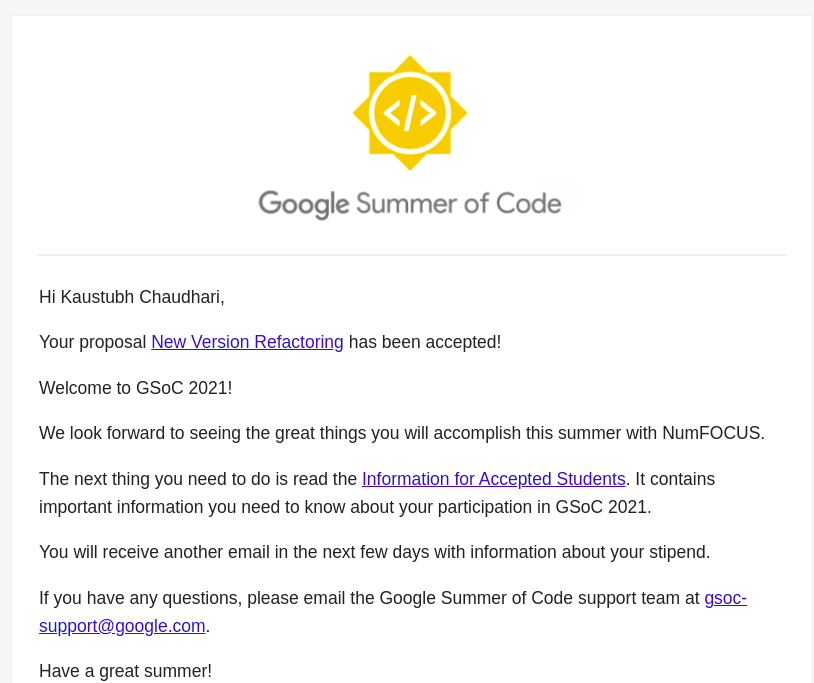

Google Summer of Code - Selection
Hi, and yeah welcome to another GSOC selection post. I'm sure most of you guys ready this already know about GSOC. For those who don't, Google Summer of Code, otherwise known as GSoC, is an initiative taken by Google to increase the participation of students in Open Source development. So yeah, let’s begin with my journey, and I'm sure you'l get something out of it. For others who are just here for the proposal well you can just jump down to the last section.
A little fun story:
May 17 17:00 UTC: It was 10:30 PM in India and I was visibly stressed. One hour from now Google was going to announce the selected projects for GSOC 2021 and well I had put a lot of effort into my proposal and I hadn't really planned what I'd do this summer if I wasn't selected, so yeah very stressed. And well time wasn't passing as quickly as I was expecting it to, so well I did what I do when I am stressfully bored :-P, I started playing Stellaris (it's a computer game). Then randomly one of my friends calls me and asks "Bhai kya hua GSOC ka?" (Bro, what happened to your GSOC ?). I was like "What?" *Sees time. It's 11:32. It was the fastest window switch I've ever made from game to mail. And well there it was:
I almost jumped "Bhai, hogaya GSOC" (Bro, got selected in GSOC). I put down the phone and I stayed there for a minute to let that sink in and well, started almost dancing with joy. I still remember my little sister giving me -so the nut has finally cracked- look when she saw me like that.
The infamous "How I got Selected" section:
Well, to be honest, my journey wasn't exactly a rigid one with an end goal of GSOC in mind. I started out with open source in around late August 2020 with the mindset of "Well, at least I could say that to my recruiters, that I worked with open source developers". My projects weren't that impressive back then, nor were my skills. My first contribution was in Django , it was a simple documentation typo. But still took nearly a day to complete but well I learned something from that. The fact that there are actually checks and tests to each of your pull requests. And you can't just randomly change code in a repository. Well, scratch that plan I guess. Jokes aside I got familiar with the PR process of Github.
Then around November, someone recommended me doing GSOC. I thought might as well give it a go. Python was the only language I was pretty confident in so I started contributing to random repositories written in Python. (which I absolutely don't recommend if your end goal is GSOC. Instead, properly choose an organization to commit to). I mainly contributed to SymPy during that period but realized that there was much more abstract math than I could handle, and I simply didn't fit in there.
Around January, I shifted my focus to other python based repositories like PyMC3 and SunPy, and fortunately, the devs at PyMC liked my contributions to Aesara (formerly known as Theano, it serves as a backend library for PyMC), @thomas then invited me as a team member for the development of Aesara and later on suggested that I should definitely give GSOC a try. Around that time a lot was going on, Theano being renamed to Aesara, the shift to RandomVaribale class. I connected with @brandon on the slack channel of Aesara. He recommended that I continue the work of Aesara and PyMC refactoring as a GSOC proposal. So I spent the rest of February and March contributing to Aesara and slowly learning about things. In around April, I built my proposal, and here we are.
Now for the less boring and straight to the point "Tips" section:
If you are a complete beginner to open source or just starting out, here are my few tips:
Beginner's tip #1: If you are someone who's just started out with Github I recommend snooping around an organization's docs first. This makes you feel familiar with the code when you look at it. I've seen first-timers just giving up after seeing how large the codebase was and how they couldn't keep track of all the functions and modules in it.
Beginner's tip #2: For the first PR, (similar to my own experience) I recommend starting with a document typo as, firstly, you'll have to search the docs for it. (again point 1). Secondly, They're the easiest PR's you could make perhaps even easier than good first issues. Remember the main aim of your first PR should be to get familiar with the organization's PR process first before you can get to navigate the codebase part.
Beginner's tip #3: Now that you know how to make a PR properly, you can start with the usual "good first issue" label. However, most of them will probably be filled with other newcomers. In which case you can click on other small issues, and see if someone has already written a basic code for it. I've seen many cases where the good first issues are filled with newcomers and there are other smaller issues with a solution already found and a complete or partially made code is present on the issue page by a core dev/contributor. Newcomers completely ignore such issues just cause it wasn't labeled as a "good first issue" and they never opened it.
Beginner's tip #4: Always remember to ask if someone else is working on that particular issue before you start, in the above cases. Or well let's just say your 'community bonding' won't be as easy (:-P)
Beginner's tip #5: For Christ's Sake ask questions and ask sensible ones. Don't just give up when you get stuck or make a mistake. The core devs aren't going to slap you through the internet for messing stuff up (well mostly). Also don't just ask them to "guide you" through the issue, show some legwork from your side and ask them how to improve.
Finally the "Proposal" section:
Here is the link to my proposal => GSOC '21 PyMC3: New Version Refactoring
My general advice on writing a proposal, try keeping yourself in the shoes of a core dev and write it assuming they are going to get 10 more such proposals (Cause they probably do). In short, keep it concise and easy to read, and the points easy to grasp even to an outsider. The number of pages doesn't matter as long as you get your idea through. (Some organizations may have min-max limitations on the number of pages though). Templates you can use any, preferably pick one from previously selected proposals, but the formatting should (again) be easy to read and properly highlight keywords. (Again some organizations may have pre-defined templates.). And preferably keep the about me section in the end and a short abstract at the start. Good luck!!